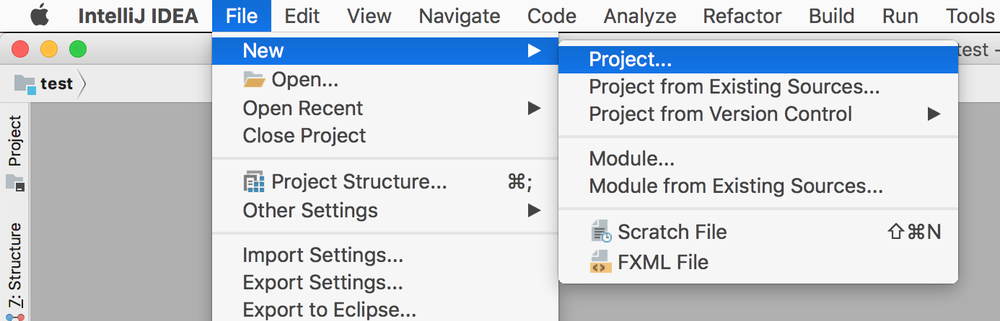
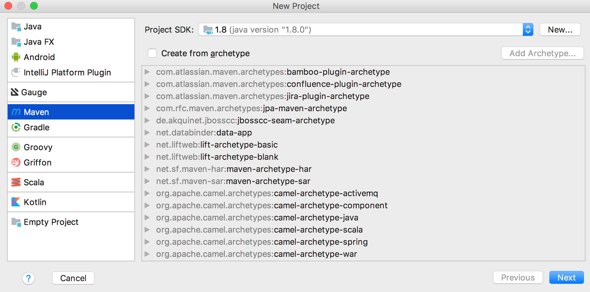
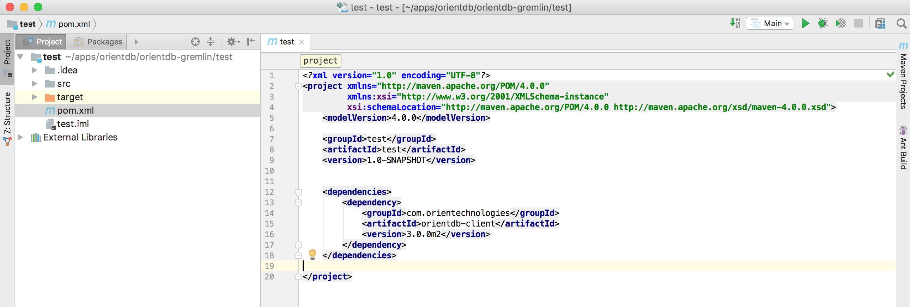

OrientDB for Java Developers in Five Minutes
In the previous step you created your first database, now it's time to create a Java application that can connect to the DB, query and manipulate it.
From now on, for this tutorial we will use IntelliJ Idea, but you can use any IDE that supports Java 8 and Maven.
Step 3/5 - Create a Maven project
Open IntelliJ Idea and:
- choose the menu File -> new -> Project...

- from the left menu, choose Maven
- make sure that Project SDK is greater or equal to 1.8
- click Next

- choose your GroupId and ArtifactId (we will use "test" "test", as this is what we are doing ;-) )
- click Next twice

Now open pom.xml file and add the following dependency:
<dependencies>
<dependency>
<groupId>com.orientechnologies</groupId>
<artifactId>orientdb-client</artifactId>
<version>3.0.0</version>
</dependency>
</dependencies>
IMPORTANT: make sure you are using the same client version as the server you are using.
and enable Java 8 as target compiler
<build>
<plugins>
<plugin>
<groupId>org.apache.maven.plugins</groupId>
<artifactId>maven-compiler-plugin</artifactId>
<configuration>
<source>1.8</source>
<target>1.8</target>
</configuration>
</plugin>
</plugins>
</build>
Click on "automatically import dependencies" if needed

Now you are ready for the Next Step - Open a DB Connection and Create the DB Schema >>>